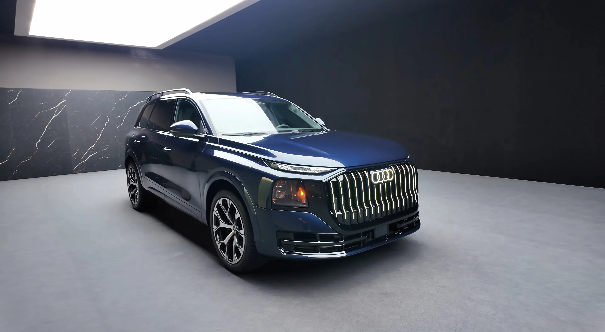
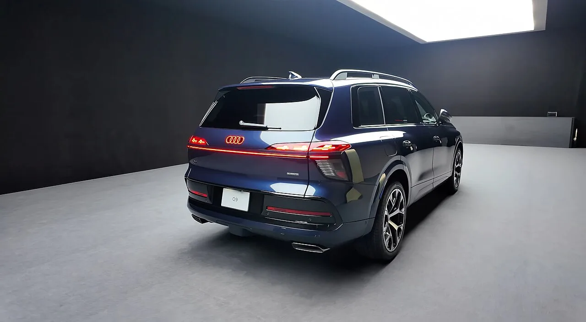
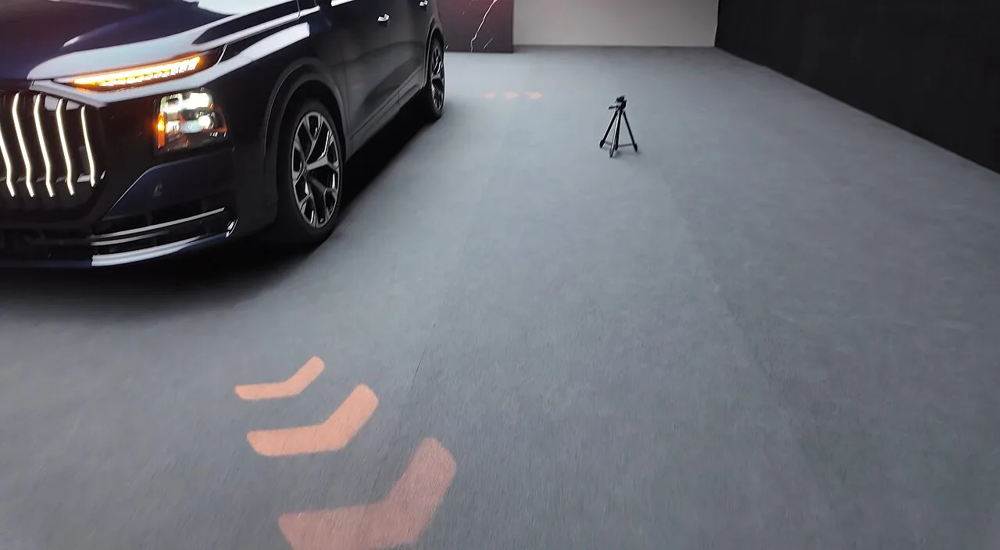
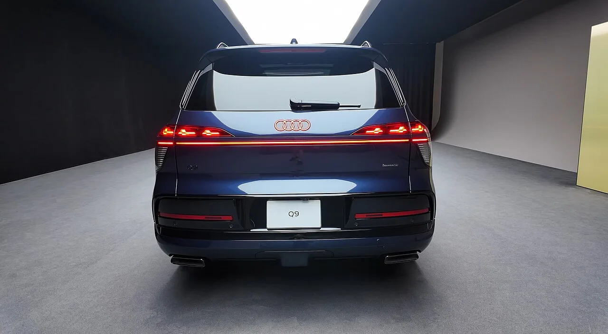
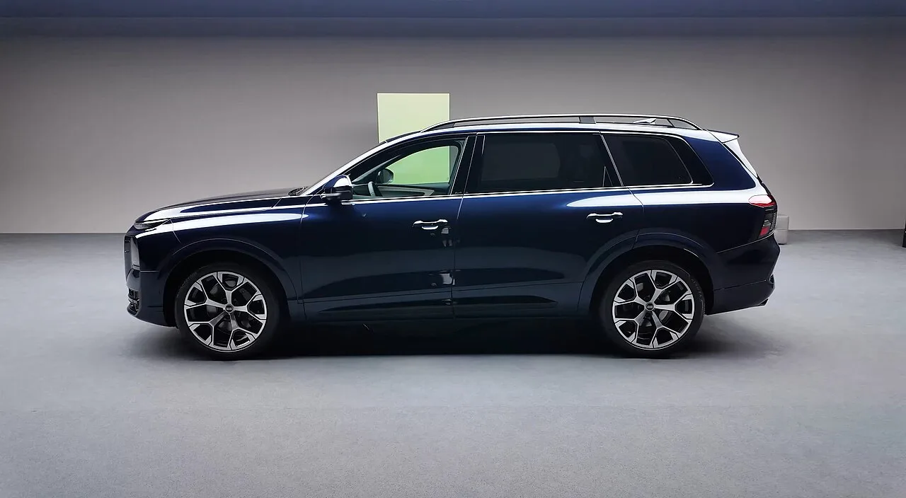
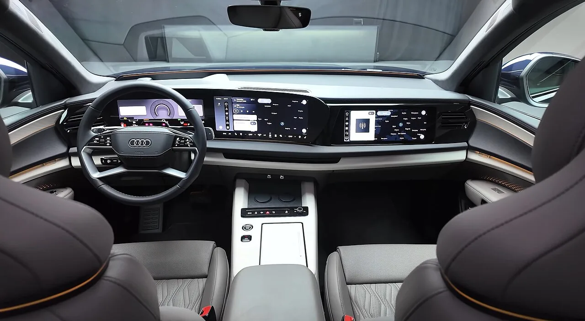

▲ 아우디 브랜드 역사상 가장 큰 SUV로 공개된 Q9의 전측면 모습. 점등된 싱글프레임 그릴이 눈에 띈다 ⓒ Autowizja, Wikimedia Commons (CC BY 4.0)
아우디가 브랜드 역사상 가장 큰 차체를 가진 SUV 'Q9'을 공개하며, 메르세데스-벤츠 GLS와 BMW X7이 양분해온 초대형 럭셔리 SUV 시장에 정식으로 도전장을 던졌다. 뉴스와이드는 "벤츠 GLS·BMW X7 잡으러 온 아우디 Q9, '밤 되면 딴 차' 정체 뭐길래"라는 제목으로, Q9이 낮과 밤에 전혀 다른 인상을 주는 조명 디자인을 갖췄다고 보도했다. 이어진 후속 보도에서는 "'밤에 그림 그리는 후미등' 아우디 첫 대형 SUV, 벤츠·BMW 긴장시킨다"며 이 차의 후미등이 단순한 램프를 넘어 하나의 발광 작품처럼 작동한다고 전했다. 기사 원문 보기
1. 왜 지금 '첫 대형 SUV'인가 — 아우디 라인업의 빈틈을 메우다
아우디는 그동안 Q7·Q8을 준대형급 플래그십으로 내세워왔지만, 벤츠 GLS와 BMW X7이 버티고 있는 '진짜' 초대형 SUV 체급에는 대응 모델이 없었다. Q9은 이 빈자리를 메우기 위해 개발된 브랜드 역사상 가장 큰 SUV다. 사실상 세단 플래그십인 A8의 역할 일부를 흡수하며, 아우디의 최상위 포트폴리오를 SUV 중심으로 재편하는 모델이라는 평가를 받는다. 지난 7월 29일 공식 공개된 이후 유럽에서는 9월부터 순차적으로 주문을 받기 시작했으며, 국내에서는 아직 정식 출시 일정이 공개되지 않았다.
2. '밤에 그림을 그리는' 후미등 — 세계 최초 커브드 디지털 OLED
Q9을 가장 상징하는 부품은 세계 최초로 적용된 3세대 '커브드 디지털 OLED' 후미등이다. 초박형 유리 기반의 플렉시블 OLED를 3차원으로 구부려 차체 곡면을 그대로 따라가도록 만든 것이 핵심으로, 여섯 개 모듈에 걸쳐 총 512개의 개별 OLED 세그먼트가 배치돼 있다. 개별 점등이 아닌 하나의 거대한 발광판처럼 작동하기 때문에, 야간에는 빛이 곡선을 따라 흐르듯 번지는 독특한 인상을 만들어낸다. 뉴스와이드가 "밤에 그림을 그리는 후미등"이라 표현한 이유도 여기에 있다. 운전자는 아우디 앱이나 차량 설정을 통해 원하는 라이트 시그니처(점등 패턴)를 직접 고를 수 있어, 같은 차라도 밤이 되면 완전히 다른 인상을 준다.

▲ Q9 후면. 차폭 전체를 가로지르는 커브드 디지털 OLED 리어램프가 점등된 모습으로, 세계 최초로 적용된 조명 기술이다 ⓒ Autowizja, Wikimedia Commons (CC BY 4.0)
전면부도 조명 기술에서 뒤지지 않는다. 디지털 매트릭스 LED 헤드램프에는 무려 2만 5,600개의 초소형 LED가 들어가, 맞은편 차량이나 앞차 운전자의 눈부심을 정교하게 피해가면서도 필요한 구간만 밝게 비추는 정밀 조사가 가능하다. 후미등과 마찬가지로 헤드램프에도 개인화된 라이트 시그니처를 적용할 수 있어, Q9의 조명 시스템 전체가 하나의 디자인 요소로 통합된 셈이다.

▲ Q9 전면 헤드램프 클로즈업. 2만 5,600개의 초소형 LED가 들어간 매트릭스 헤드램프의 정밀한 조사 패턴을 확인할 수 있다 ⓒ Autowizja, Wikimedia Commons (CC BY 4.0)
OLED가 기존 LED 후미등과 다른 점은 '발광 방식' 자체에 있다. LED는 점광원이 렌즈·도광판을 거쳐 빛을 퍼뜨리는 구조라 아무리 세그먼트를 쪼개도 결국 점들의 집합으로 보이지만, OLED는 유기물질 층 전체가 균일하게 스스로 빛을 내는 면광원이다. 두께가 1mm 안팎으로 얇고 유연해 3차원 곡면으로 그대로 성형할 수 있다는 점이 Q9에 처음으로 '커브드' 구조를 가능케 한 배경이다. BMW도 i7·XM 등에 OLED 후미등을 적용해 '스웜(Swarm)' 애니메이션을 선보인 바 있지만 평면 패널에 그친 반면, Q9은 세그먼트 단위 곡면 성형까지 끌어올렸다는 점에서 차이가 있다.

▲ Q9 정후면. 좌우 램프를 잇는 커브드 OLED 라인이 차체 곡면을 따라 끊김 없이 이어지는 모습이 한눈에 들어온다 ⓒ Autowizja, Wikimedia Commons (CC BY 4.0)
다만 국내 도입 시 라이트 시그니처 기능이 유럽·북미형 그대로 구현될지는 지켜봐야 한다. 국내 도로교통법령상 방향지시등은 순차 점등(시퀀셜) 방식까지는 허용돼 있지만, 주행 중 후미등이 애니메이션처럼 계속 움직이는 연출은 원칙적으로 제한되며, 웰컴·굿바이 같은 정차 시 연출 기능만 인정받는 경우가 많다. 즉 Q9의 개인화 라이트 시그니처 중 상당수는 국내에서는 국토교통부 자동차안전기준 인증 절차를 거쳐 기능이 조정된 채로 들어올 가능성이 크다.
3. 파워트레인 & 제원 — 요약만 짚고 넘어가면
파워트레인은 판매 시장에 따라 갈린다. 유럽형은 3.0리터 V6 디젤 마일드 하이브리드(299마력·630Nm), 북미형은 2.9리터 V6 터보 가솔린(429마력·제로백 4.9초), 최상위 SQ9은 4.0리터 트윈터보 V8(591마력·제로백 3.8초)이다. 차체는 전장 5,310mm·전폭 2,210mm·전고 1,810mm·휠베이스 3,140mm로, 6인승 또는 7인승을 고를 수 있다. 세부 트림별 수치와 좌석 구성 비교는 별도 기사에서 더 자세히 다뤘다.
| 항목 | 유럽형(디젤) | 북미형(가솔린) | SQ9 |
|---|---|---|---|
| 엔진 | 3.0L V6 디젤 MHEV | 2.9L V6 터보 가솔린 | 4.0L 트윈터보 V8 |
| 최고출력 | 299마력 | 429마력 | 591마력 |
실내는 11.9인치 디지털 계기판, 14.5인치 인포테인먼트 디스플레이, 10.9인치 동승석 전용 디스플레이가 곡면으로 이어진 '디지털 스테이지' 구성을 갖췄다. 이 곡면 디스플레이 제작 방식 역시 후미등과 마찬가지로 '휘어지는 패널'을 다루는 아우디의 최근 기술 기조를 보여준다.
4. 벤츠 GLS·BMW X7과 승부처는 '조명'이 될 것
Q9의 전장 5,310mm는 벤츠 GLS(5,207mm)·BMW X7(5,151mm)을 모두 웃돈다. 하지만 초대형 SUV 3파전에서 차체 크기 차이는 100mm 안팎으로, 체감상 결정적인 우위라 보기 어렵다는 게 업계 평가다. 가격 역시 미국 기준 Q9 8만 9,095달러부터, SQ9 11만 9,395달러부터로 GLS·X7과 비슷한 체급을 형성한다. 결국 크기·가격이 아니라 GLS·X7에는 없는 세계 최초 커브드 디지털 OLED 후미등과 2만 5,600개 매트릭스 헤드램프 같은 '조명 기술'이 이번 3파전에서 가장 뚜렷한 차별화 포인트라는 점이 핵심이다. 세 모델의 크기·좌석구성·파워트레인·가격을 항목별로 뜯어본 비교는 별도 기사에서 더 깊이 다뤘다.
| 모델 | 전장 | 비고 |
|---|---|---|
| 아우디 Q9 | 5,310mm | 세계 최초 커브드 디지털 OLED 후미등 |
| 벤츠 GLS | 5,207mm | 현행 모델 |
| BMW X7 | 5,151mm | 현행 모델(신형은 5,180mm 예상) |

▲ Q9 측면 프로파일. 전장 5,310mm의 차체가 벤츠 GLS·BMW X7보다 긴 초대형 SUV임을 보여준다 ⓒ Autowizja, Wikimedia Commons (CC BY 4.0)
5. 국내 출시 전망 — 2026년 말~2027년 초 예상
국내 출시 시점은 2026년 말에서 2027년 초로 예상되지만, 아직 아우디코리아의 공식 발표는 나오지 않았다. 미국 시장은 올해 말부터 고객 인도가 시작되며, 유럽은 9월부터 순차적으로 주문 접수에 들어갔다. 국내에는 현재 Q7·Q8이 아우디의 준대형~대형 SUV 라인업을 맡고 있는 만큼, Q9이 정식 투입되면 국내 수입 SUV 시장의 최상위 체급 경쟁 구도에도 적지 않은 변화가 예상된다. 다만 북미·유럽 외 시장에 대한 판매 계획은 여전히 검토 단계로 알려져, 정확한 국내 출시 시기와 트림 구성은 아우디코리아의 추가 발표를 지켜봐야 한다. 관련 소식은 아우디 공식 홈페이지에서 확인할 수 있다. 바로가기

▲ Q9 실내. 11.9인치 디지털 계기판과 14.5인치 인포테인먼트 디스플레이가 곡면으로 이어진 디지털 스테이지 구성이다 ⓒ Autowizja, Wikimedia Commons (CC BY 4.0)
6. 정리
Q9은 단순히 아우디 라인업에 새 체급을 추가한 모델이 아니라, 세계 최초 커브드 디지털 OLED 후미등과 2만 5,600개 LED 매트릭스 헤드램프로 '조명 디자인'이라는 새로운 무기를 들고 나온 도전자다. 전장 5,310mm로 벤츠 GLS(5,207mm), BMW X7(5,151mm)을 모두 앞서는 차체에 세 개의 곡면 디스플레이로 이어진 디지털 스테이지, 최대 591마력의 SQ9까지 더해지며 초대형 럭셔리 SUV 시장의 판도를 흔들 준비를 마쳤다. 국내 출시는 2026년 말에서 2027년 초로 예상되는 만큼, 아우디코리아의 후속 발표에 관심이 쏠린다.